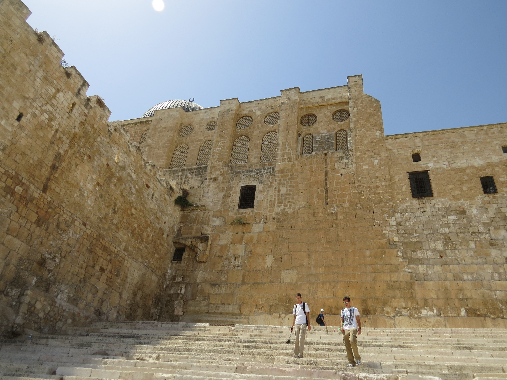

Southern Steps (Hulda Gates)

- Find Name
- Southern Steps (Hulda Gates)
- Historical Period
- Herodian Period
- Artifact Date
- 1st century BC–1st century AD (Herodian construction)
- Date Discovered
- 1968–1978 (excavated)
- Discovery Location
- Southern Temple Mount, Jerusalem, Israel
- Current Location
- In situ, Jerusalem Archaeological Park
- Timeline Era
- Return and Second Temple
- Description
- The broad Herodian stairway by which pilgrims ascended to the Temple through the Hulda Gates, excavated by Benjamin Mazar, with ritual baths alongside for purification before entering. The wide, shallow steps were designed so that pilgrims would walk slowly and reverently upward.
- Biblical Significance
- These are the steps the festival crowds climbed — the road up to the house of the LORD that the Psalms sing about, and the way Jesus and his family would have gone up to Jerusalem for the Passover. Standing on them, the pilgrim psalms stop being poetry and become a journey.
- Evidence Class
- Contextual
- Interpretations
- Scholars agree the steps and gates are Herodian and served Temple pilgrims; the name 'Hulda Gates' is traditional, after the prophetess Huldah, rather than an excavated inscription.
- Scripture Illuminated
- Related Books
- Related Places
Awaiting Review Not yet checked against scholarly sources. Treat its claims as provisional until this entry is reviewed. About verification
Last reviewed: not yet reviewed